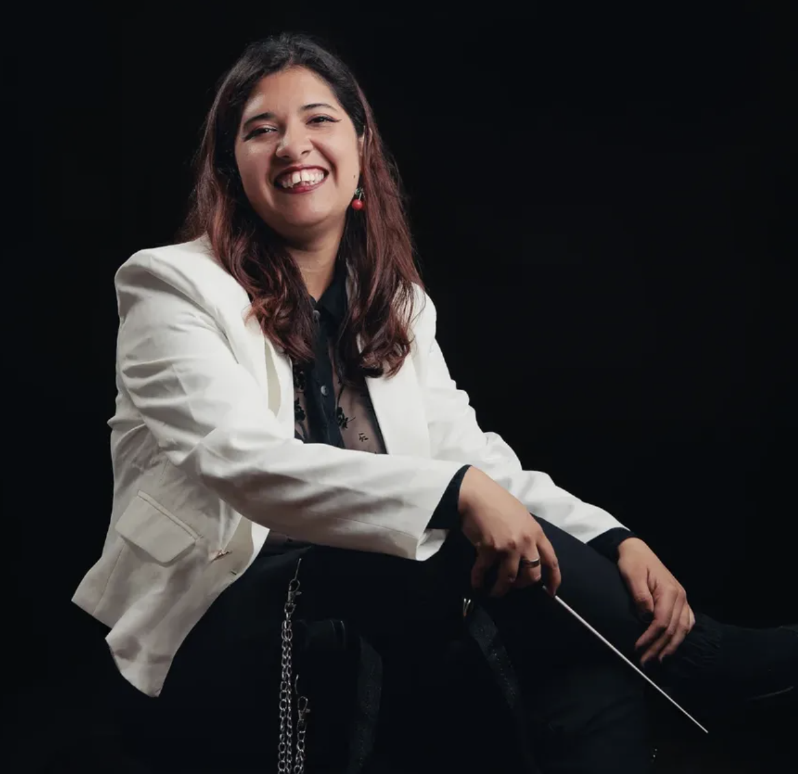
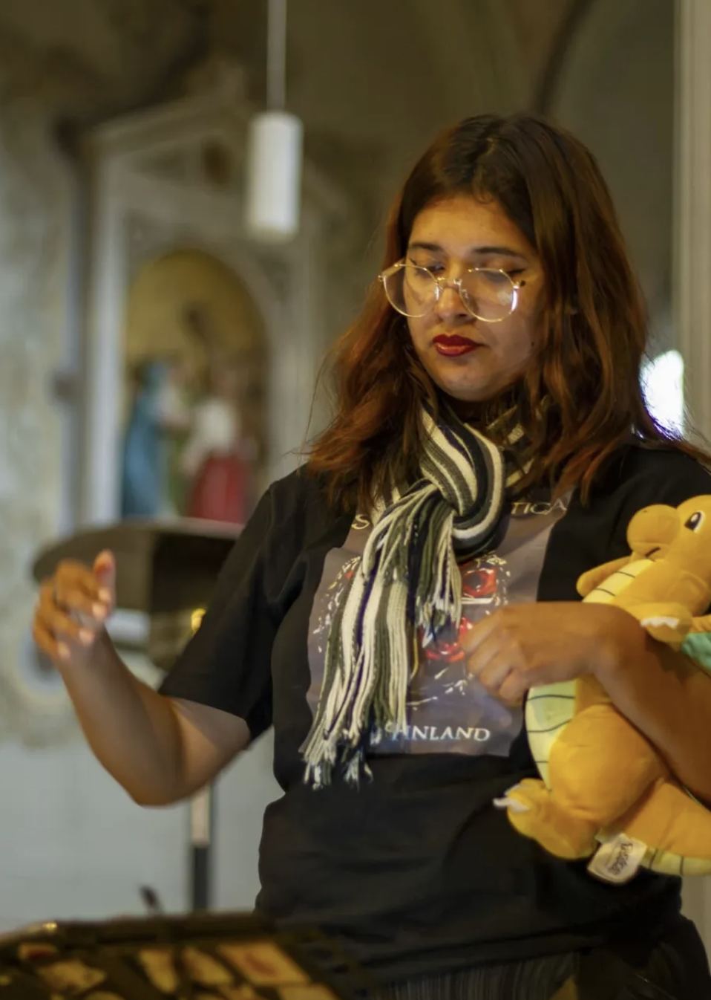

Violinista · Pianista · Directora de Orquesta
La música que acerca mundos
Valparaíso, Chile

La música fue mi refugio. Cuando era niña sufrí bullying, y ella me ayudó a lidiar con eso. Ha sido mi motor y lo mejor que me ha pasado.
Danitza Villarroel Orrego es violinista, pianista y directora de orquesta oriunda de Valparaíso, Chile. Proveniente de una familia de músicos, descubrió su pasión a los cinco años en la Escuela Ramón Barros Luco de Valparaíso. A pesar de que un profesor le dijo que "no tenía talento", la confianza de sus padres la impulsó a seguir adelante. Hoy lidera proyectos orquestales que democratizan la cultura clásica y visibilizan el rol de la mujer en la dirección musical.
Ha estudiado dirección orquestal con maestros como Eduardo Browne, Helmuth Reichel y Ninoska Medel en Santiago. En 2024 fue seleccionada como titular del HUB de Directoras de Orquesta, programa dirigido por la maestra Alejandra Urrutia, consolidándose como una de las figuras más destacadas de la escena musical regional chilena.

Trayectoria
Ingresa como violinista a la orquesta de la Escuela Ramón Barros Luco de Valparaíso, superando una evaluación inicial que la había rechazado. El comienzo de una carrera imparable.
Se integra a la Orquesta Sinfónica Regional de la Fundación de Orquestas Juveniles e Infantiles de Chile (FOJI) en Valparaíso, donde permanece durante diez años enriqueciendo su formación como intérprete.
Comienza estudios de piano con el maestro Ítalo Olivares, profundizando su comprensión de la música desde múltiples ángulos interpretativos.
Inicia sus estudios universitarios, descubriendo nuevas dimensiones del arte musical que, en sus propias palabras, "le abrieron el mundo".
Lidera un espectáculo solidario con 60 músicos de la región de Valparaíso en el Teatro Municipal, recaudando fondos para las víctimas de los incendios forestales que devastaron el centro-sur de Chile. Este hito marca el germen de la futura Orquesta Filarmónica Alimapu.
En el encuentro internacional "Jóvenes por la Música y la Vida" en Bolivia, dirige una orquesta de más de 500 músicos de distintos países. Ese momento confirmó su vocación como directora.
Funda oficialmente la Orquesta Filarmónica Alimapu, proyecto autogestionado y profesional que busca acortar la distancia entre el mundo orquestal y la comunidad de la Región de Valparaíso.
Es reconocida como Joven Líder P!ensa por la Fundación Piensa, destacando su labor cultural. Ese mismo año asume la dirección del Orfeón Patrimonial de Valparaíso, cargo que ejerció hasta finales de 2024.
Seleccionada como titular del HUB de Directoras de Orquesta 2024, plataforma que impulsa el talento de mujeres directoras, dirigida por la maestra Alejandra Urrutia. Participa también en el Curso de Dirección Orquestal del Ministerio de las Culturas con el maestro Emmanuel Siffert.
Fundó y dirige esta agrupación profesional autogestionada que lleva la música orquestal a teatros, iglesias, museos y escuelas de toda la Región de Valparaíso.
Dirigió el Orfeón Patrimonial de Valparaíso, agrupación dedicada a la preservación y difusión del patrimonio musical de la ciudad puerto.
En el encuentro "Jóvenes por la Música y la Vida" en Bolivia, dirigió una orquesta multinacional con más de 500 intérpretes de varios países latinoamericanos.
Reconocida por la Fundación Piensa por su impacto social y cultural como joven líder que usa la música para beneficiar a las comunidades más vulnerables.
Seleccionada como participante titular en el HUB 2024, plataforma que impulsa el talento de mujeres en la dirección musical en un campo históricamente dominado por hombres.
Organizó y lideró un espectáculo benéfico con 60 músicos en el Teatro Municipal de Valparaíso para ayudar a los damnificados de los incendios que afectaron Chile.
Perfil profesional
Proyecto estrella
La Orquesta Filarmónica Alimapu es el proyecto más ambicioso de Danitza: una agrupación profesional, autogestionada y autónoma que aporta al desarrollo humano y a la difusión músico-cultural desde Valparaíso.
Alimapu genera conciertos en lugares tan diversos como el Palacio Rioja, el Museo Marítimo Nacional, la Catedral de Valparaíso, plazas públicas y establecimientos educacionales, transformando los paradigmas sinfónicos tradicionales e incorporando repertorios latinoamericanos en sus programas.
Opera a través de comités bajo la Asociación Filarmónica del Pacífico, priorizando la inclusión y la equidad de género en todo su quehacer.
músicos dirigidos en
una sola función
temporadas de conciertos
en la UV
inicio del proyecto
benéfico fundador
comunidades
alcanzadas
Contacto
Para proyectos, colaboraciones o clases de música